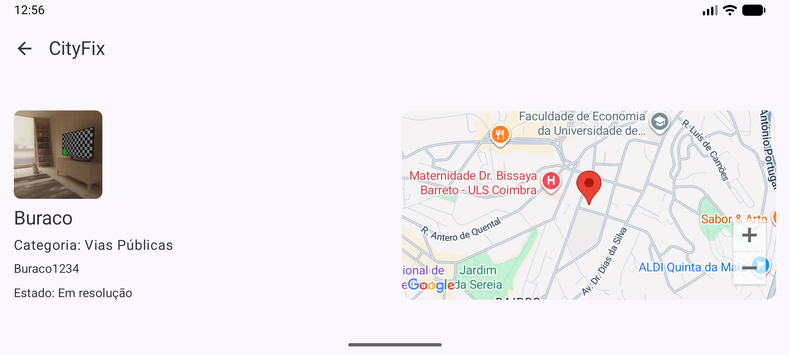
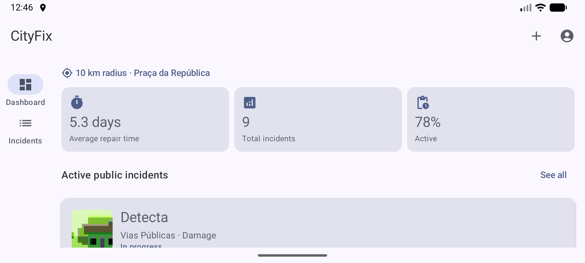

Relatório técnico do trabalho prático
Arquiteturas Móveis · Engenharia Informática · ISEC · 2026/27
| Aluno | Número |
|---|---|
| Marco Marcelo | 2024114817 |
| Rodrigo | 2024134442 |
Entrega: 22 de novembro de 2026
O CityFix é uma aplicação Android, escrita em Kotlin com Jetpack Compose, para a participação de ocorrências urbanas no município de Coimbra. Os munícipes registam, georreferenciam e acompanham problemas no espaço público; os operadores municipais gerem as categorias, validam os munícipes e conduzem cada ocorrência (ticket) ao longo do seu ciclo de vida, com prova fotográfica ou em vídeo da resolução.
O backend é o Firebase: Authentication, Cloud Firestore (com cache offline), Storage, Cloud Messaging e Cloud Functions. O trabalho de rede pesado (envio de fotografias e vídeos, fecho automático, avisos) corre em segundo plano com o WorkManager.
Este relatório descreve as soluções técnicas adotadas, as opções de implementação tomadas onde o enunciado deixava margem, os testes realizados e as oportunidades de melhoria.
A aplicação segue a arquitetura usada nas aulas práticas (ContactsApp, fichas P08 a P10), adaptada ao domínio do CityFix:
model/): classes de dados imutáveis (Incident, User, Category, Message, StatusChange, Session) e as regras do ciclo de vida (IncidentLifecycle).data/): repositórios que encapsulam o Firebase (AuthRepository, IncidentsRepository, MessagesRepository, CategoriesRepository, StatsRepository, LocationRepository), os mappers entre objetos Kotlin e documentos Firestore e os workers do WorkManager. Os repositórios são criados uma vez na classe CityFixApp (Application) e partilhados.viewmodel/): expõem o estado como StateFlow, criados por factories. Os ViewModels globais (sessão, lista) estão associados à Activity; os de um ecrã (formulário, ticket, mensagens) estão associados à rota de navegação, sendo destruídos ao sair do ecrã. O estado que tem de sobreviver à recriação (texto escrito, diálogos abertos, fotografia escolhida) fica no SavedStateHandle.ui/): ecrãs e componentes Compose stateless, que recebem dados e callbacks; a MainActivity faz a ligação (stateful) entre ViewModels e ecrãs.A navegação usa rotas tipadas (@Serializable, Navigation Compose). Antes da navegação, a MainActivity observa o estado da sessão, uma sealed interface com os estados Loading, Guest, AwaitingMfa, PendingValidation e Active, e mostra o ecrã adequado. O AuthRepository calcula este estado combinando o utilizador do Firebase Auth, a conclusão do 2.º fator neste telemóvel e o perfil no Firestore. As barras de topo, o botão flutuante e a barra de navegação (inferior em portrait, lateral em landscape) mudam com o ecrã e com o perfil.
| Pacote | Conteúdo |
|---|---|
model | Entidades, enumerados (estado, situação, alcance, perfil) e regras do ciclo de vida |
data | Repositórios, mappers Firestore, workers (envio de media e prova, fecho automático), envio do código MFA |
viewmodel | ViewModels e factories (sessão, login, registo, lista, formulário, ticket, mensagens, dashboard, área do anónimo, operador) |
ui/screens, ui/components | Ecrãs e componentes Compose stateless |
notifications, geofence, sensors | Notificações locais e push, geofences do operador, deteção de impactos |
utils | Ficheiros, compressão de imagem, localização e validações |
| Coleção / caminho | Conteúdo |
|---|---|
users/{uid} | Perfil: nome, e-mail, telefone, NIF, perfil, estado (PENDING/ACTIVE), localização, deteção de impactos, fotografia, token FCM |
nifs/{PERFIL_NIF} | Reserva do NIF, para garantir que é único por perfil |
categories/{id} | Tipologias definidas pelo município (nome, ativa/inativa) |
incidents/{id} | Ocorrência: categoria, situação, descrição, alcance, coordenadas e morada, media e miniatura, estado, histórico, prova, seguidores (grupo), proximidade da equipa |
incidents/{id}/messages | Mensagens entre o munícipe e os serviços camarários |
stats/global | Indicadores do dashboard (contadores e tempo de reparação), atualizados com FieldValue.increment() no mesmo batch que a ocorrência |
mail/{id} | Pedidos de envio do código do 2.º fator (extensão Trigger Email) |
Storage incidents/{id}/…, users/{uid}/avatar.jpg | Fotografias, vídeos, miniaturas, prova de resolução e fotografia de perfil |
Offline. As leituras usam snapshot listeners transformados em Flow (callbackFlow), servidos pela cache local do Firestore. As escritas são feitas sem esperar pela resposta do servidor: sem rede ficam na fila local, aparecem logo na interface e são sincronizadas quando a ligação volta. As exceções são as operações em que o utilizador tem de saber o resultado (registo, login, envio do código), que aguardam a confirmação.
Segurança. As regras do Firestore e do Storage (firestore.rules, storage.rules) aplicam as permissões por perfil: cada utilizador só lê o seu perfil (o operador lê todos); o munícipe só altera telefone, deteção de impactos, fotografia e token; o operador só muda o estado (validação); as ocorrências privadas só são lidas pelo autor e pelos operadores; uma ocorrência encerrada não admite alterações nem mensagens; o operador só pode registar-se com e-mail do domínio da autarquia.
nifs/{PERFIL_NIF} e o perfil são gravados numa transação; se o NIF já existir, nada é gravado e a conta acabada de criar é apagada.AppConfig.OPERATOR_EMAIL_DOMAIN) fica operador e ativo; os outros ficam munícipes pendentes até um operador os validar (nome, localização e NIF).Depois da password, a aplicação gera um código de 6 dígitos (SecureRandom) e envia-o para o e-mail da conta: grava um documento em mail/ e a extensão oficial Trigger Email from Firestore envia-o por SMTP. O código é válido 10 minutos e admite 5 tentativas; no telemóvel guarda-se apenas o resumo SHA-256 (com o uid), nunca o código em claro. Depois de confirmado, o 2.º fator fica registado no dispositivo, cumprindo a sessão mantida em cache após a autenticação inicial; volta a ser pedido depois de sair da sessão.
A recuperação de credenciais usa o e-mail de reposição do próprio Firebase Authentication.
As transições válidas estão concentradas em IncidentLifecycle: Aberto → Pedido de Informações → Em Resolução → Resolvido → Encerrado, com regresso a Aberto por reabertura. Cada mudança acrescenta ao histórico uma entrada com estado, timestamp, autor e nota (arrayUnion, só os campos do ciclo de vida, funcionando offline).
ProofUploadWorker.AutoCloseWorker (de 6 em 6 horas e ao abrir a app) e no servidor por uma Cloud Function agendada, para acontecer mesmo que ninguém abra a app. Encerrado, o ticket fica bloqueado (regras do Firestore e interface).As mensagens ficam na subcoleção incidents/{id}/messages e são lidas em tempo real, ordenadas por timestamp. As do próprio utilizador aparecem à direita e as da outra parte à esquerda, com o perfil e a hora. Numa ocorrência encerrada o campo de escrita desaparece.
Ao criar uma ocorrência, procura-se uma ocorrência pública ativa de outro autor com a mesma categoria e situação a menos de 10 m. Se existir, o munícipe passa a acompanhá-la (lista followers), a sua descrição segue como mensagem e não é criada uma ocorrência repetida. Os seguidores recebem as mesmas notificações que o autor.
TakePicture com FileProvider) ou pelo Photo Picker; vídeos pela câmara ou galeria; mostradas com Coil 3.MediaUploadWorker, ProofUploadWorker) com a restrição NetworkType.CONNECTED: sem rede, o trabalho espera e é retomado automaticamente.LocationRepository pede a localização e verifica a distância à Praça da República (raio de 10 km); fora da área, sem permissão ou sem GPS, é mostrado um ecrã de bloqueio com "Tentar novamente", "Abrir definições" e "Iniciar sessão".secrets.properties, e entra no Manifest por manifestPlaceholders; está restrita ao Maps SDK for Android e à assinatura da aplicação.GeofenceReceiver grava a hora em operatorNearbyAt; os autores e seguidores recebem o alerta de que a equipa camarária está na zona. Requer localização em segundo plano ("Permitir sempre").ImpactDetector): o acelerómetro passa por um filtro passa-baixo que estima a gravidade; a aceleração sem gravidade é projetada na vertical e, acima de 12 m/s², é sugerido ao munícipe abrir uma ocorrência com o formulário já preenchido (categoria de vias, situação Dano, localização atual). Há um intervalo mínimo de 30 s entre sugestões. Só ativo se o munícipe o escolheu no perfil.Combinámos dois mecanismos:
NotificationsWatcher): com a app em execução, os snapshot listeners detetam mudanças de estado, mensagens novas, proximidade da equipa e, para o operador, ocorrências novas, pedidos de esclarecimento e reaberturas. O último estado visto fica guardado, por isso as mudanças ocorridas com a app fechada também são notificadas ao abri-la. O aviso das 24 horas antes do fecho é agendado com o WorkManager (ClosingReminderWorker).onIncidentCreated, onIncidentUpdated, closeResolvedIncidents, região europe-west1, Node 22) enviam push para o token guardado no perfil, cobrindo o caso da app fechada.TakePicture / CaptureVideo), que não exige a permissão CAMERA: a aplicação não acede diretamente ao hardware, o que é a opção recomendada pela Google por pedir menos permissões ao utilizador.values/) e português (values-pt/), conforme o idioma do dispositivo; nenhum texto está escrito no código.ShowScreen da ficha P10 (LocalConfiguration e weight(1f)). Todos os ecrãs têm scroll, para não cortar conteúdo.mergeDescendants), ações com rótulo para o leitor de ecrã ("ver detalhes", "editar categoria"), títulos marcados como cabeçalho e áreas de toque com pelo menos 48 dp.

Testámos no emulador (Android 7 e Android 16 com Google Play) com dois munícipes e um operador reais:
| Área | Resultado |
|---|---|
| Registo, validação de munícipe, login com código por e-mail, recuperação da password | OK |
| Ocorrência com fotografia e com vídeo, miniaturas, offline (criação sem rede e envio posterior) | OK |
| Ciclo completo: pedir dados, resposta, iniciar, resolver com prova, reabrir (com e sem justificação) | OK |
| Mensagens nos dois sentidos | OK |
| Ocorrência de grupo com dois munícipes | OK |
| Notificações locais e push com a app fechada | OK |
Deteção de impactos (sensor simulado com adb emu sensor) | OK |
Geofence de 20 m (localização simulada com cmd location providers) | OK |
| Landscape nos ecrãs principais; inglês e português | OK |
| Leitor de ecrã (TalkBack): cartões, mensagens e indicadores do dashboard | OK |
geo fix não atualizaram a localização usada pelas geofences; o teste foi feito com um fornecedor de localização de teste. Num telemóvel físico este passo não é necessário.@isec.pt, porque é o domínio com caixas de correio reais a que temos acesso (necessárias para o código por e-mail). Numa câmara real seria o domínio municipal; está num só sítio (AppConfig e regras).stats/global) em vez de contar todas as ocorrências em cada leitura, o que permite ao anónimo lê-los sem acesso às ocorrências privadas.IncidentLifecycle e dos validadores, e de interface).firebase-functions.google-services.json está incluído.secrets.properties (raiz do projeto, incluído no ZIP). A chave está restrita à assinatura de debug dos autores; noutro computador é preciso acrescentar o SHA-1 desse computador na consola Google Cloud, ou os mapas aparecem cinzentos.@isec.pt; como munícipe, qualquer e-mail real (o código do 2.º fator é enviado por e-mail). O munícipe tem de ser validado por um operador.functions/ e as regras em firestore.rules e storage.rules (publicadas com firebase deploy).| Marco (2024114817) | Rodrigo (2024134442) |
|---|---|
| Adaptação da arquitetura das aulas P08 e P09; integração com o Firebase (Firestore offline, Storage, WorkManager); autenticação, perfis, MFA, validação de munícipes e categorias; mensagens e reabertura; chave do Maps; publicação das Cloud Functions e regras; testes | Modelo inicial e navegação; mapas (ficha 10); perfil anónimo e dashboard; ciclo de vida do ticket do operador e prova de resolução; fecho automático; vídeos; ocorrências de grupo; deteção de impactos; notificações locais e push; geofence; Cloud Functions e regras |